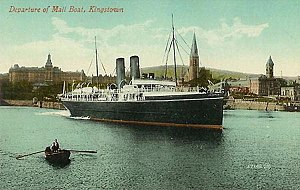

RMS Leinster
The RMS Leinster was the mail boat from Holyhead to Dun Laoghaire during World War I. The RMS Leinster belonged to the City of Dublin Steam Packet Company. It carried passengers and mail between Ireland and Wales. The Leinster was attacked by the German submarine UB-123 on October 10th, 1918 off Kish Bank. It was carrying 771 passengers, about 400 of these would have been soldiers bound for England and the Continent. The ship was torpedoed twice, three minutes apart. The first torpedo struck the post office quarters, killing all but one of the post office staff. In total there were only 256 people rescued, most of the survivors being taken to hospital in Dun Laoghaire. This represents one of Dublin’s greatest maritime tragedies. The Leinster lies approximately 22km west of Dun Laoghaire with her bow pointing south. The bow stands proud of the seabed, a little apart from the rest of the wreck, which hass largely collapsed and settling into the sands.
Check out the Wreck Report for further RMS Leinster information.
Click here to check out the 3D model of the RMS Leinster lying on the seabed.